Critical Labor History of Generative Models
SIGGRAPH Talks ’26Abstract
Our work introduces SIGGRAPH to critical theories of generative models, focusing on socioeconomic relations to research and art. We introduce critical theory through computing's relationship to commodification and labor and contrast two views of generative models: one as the automation of labor and another examining their role in altering human sociality.
Talk Slides & Speaker Notes
Below are the talk slides with accompanying speaker notes from the SIGGRAPH ’26 short talk. The talk was 20 minutes and was aimed at a computer graphics audience, meaning that we had to gloss over a lot of topics. For a more thorough treatment, I will refer you to our recent preprint Synthetic Sociality: How Generative Models Privatize the Social Fabric. It covers many of the ideas in this talk in much greater detail and with more theoretical rigor.

No speaker notes.
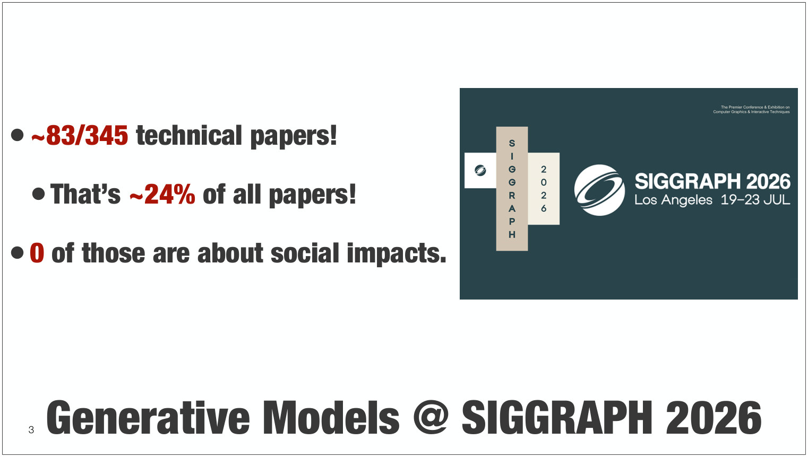
Take these stats with a large pinch of salt, but by my count, about a quarter of the science that goes into SIGGRAPH’s technical program is about generative models nowadays.
Despite many nuanced discussions on improving the results and performance of the diffusion process, we have scarcely engaged the technology's societal impacts.
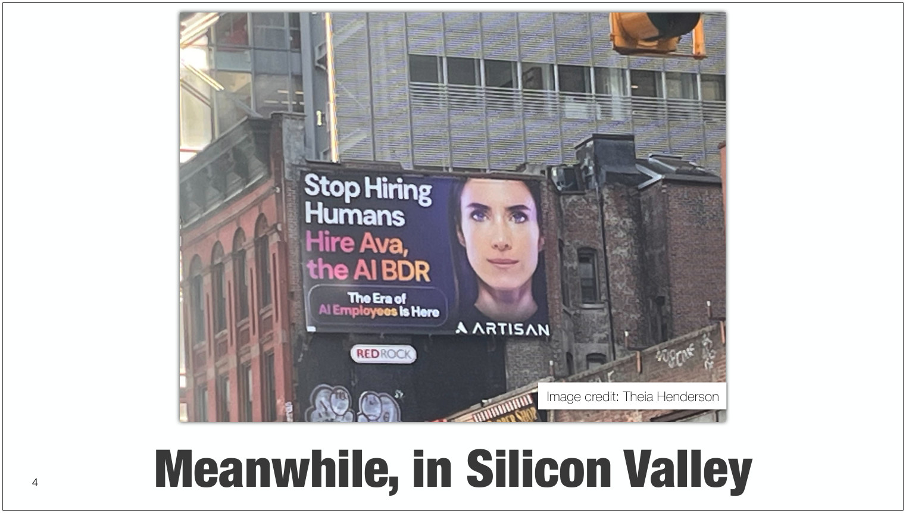
While we’re not talking about the impacts of AI on society, Silicon Valley is.
And, for a lot of them, this is the vision.
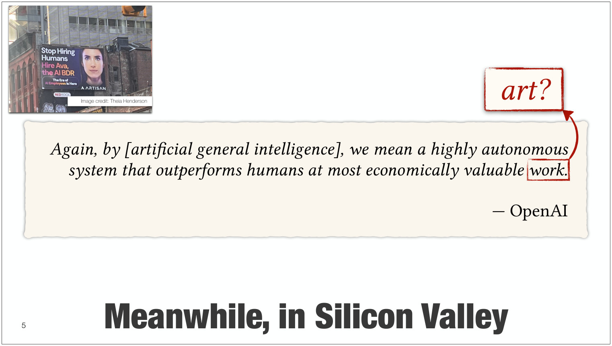
This isn’t just this one company. OpenAI says: “…”
They define intelligence in terms of it’s economic value.
And… understanding automation is difficult general, but more so when it comes to one specific form of work: art.
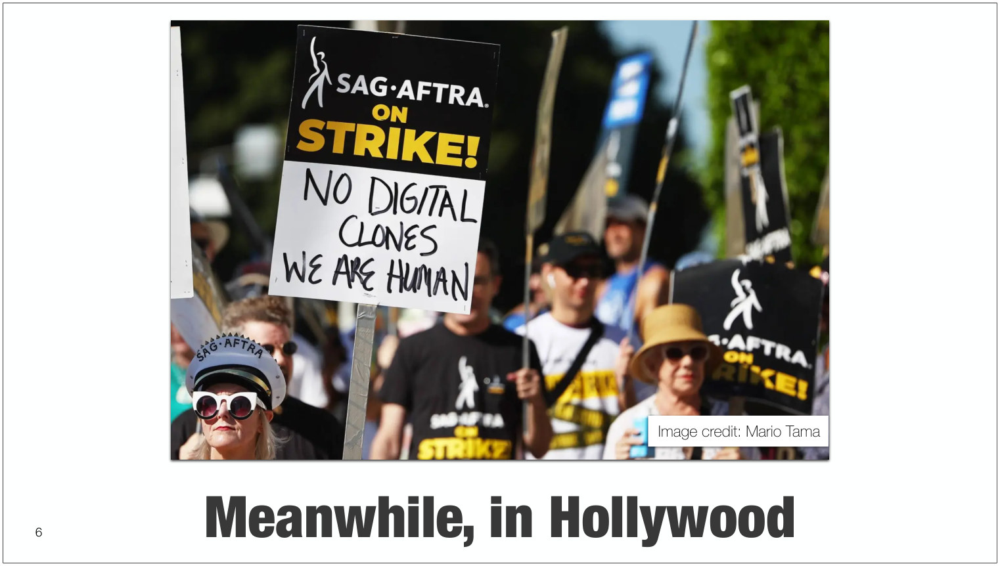
Again, while the research community is not thinking about the impacts of our work on on labor, artists right here in LA have to.
Here is a picture of the screen actor’s guild wrestling with the consequence of a SIGGRAPH-grown technology being used to replace them!
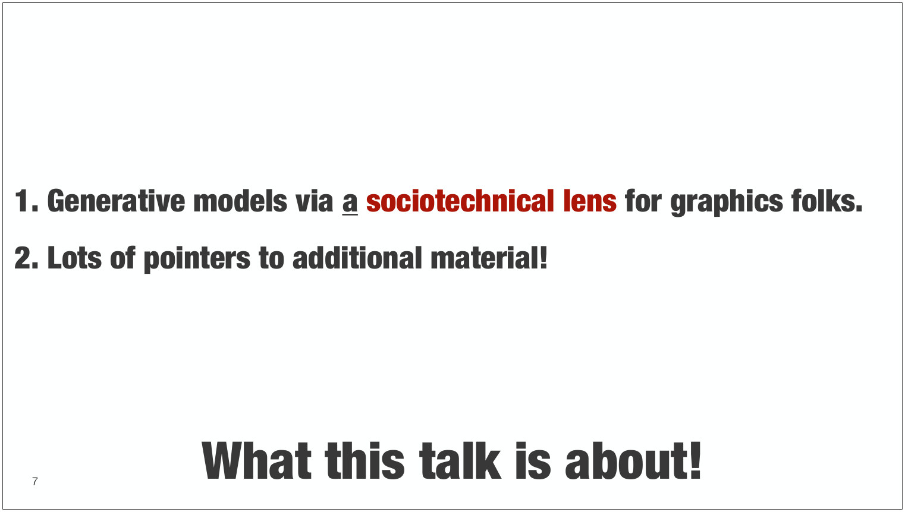
We initiate this conversation by presenting generative models through one specific sociotechnical lens.
I will be simplifying immensely and if you’re an expert in this stuff… well first, we should be friends, but I am also sorry if I offend by simplifying. The talk will include recommended reading and some pointers to get you oriented.
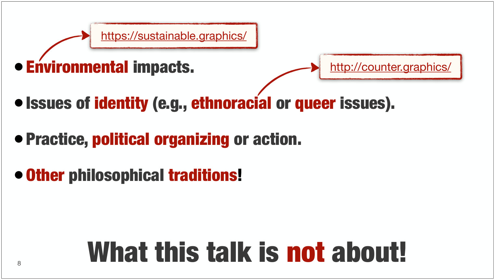
- Few things talk is not about.
- This talk is not about the environment. Talk to these folks.
- It’s also not about, e.g., issues of representation in training data, etc.
- Sorry, this will be a dry academic talk full of theory. But you know, you might likely find some of this useful down the line if you are an organizer.
- Disclaimer: only one tradition! If you disagree with their premises, that’s okay! This session already seems to have had quite a few talks in the liberal (or maybe even neoliberal) tradition.
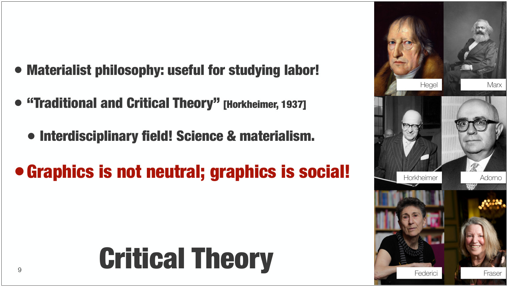
- The now infamous “Frankfurt School” posited a new way of doing social science and theorizing society they called critical theory.
- Instead of imitating the posture of being neutral and objective, the idea is to recognize that the theorist is embedded in society and social theory either props up or challenges the social order.
- Instead of pretending there is a neutral objectivity, they say, the theorist should make cognisant what they think the world should look like and then work towards it.
- In the case of critical theory the goal is to help liberate people from domination, including that due to the economic system.
- While the research community does not talk about it, graphics is also socially embedded. Not only in the political economy as it pertains to artists, but our visual culture shapes our society and graphics technologies are at the forefront of shaping our culture.
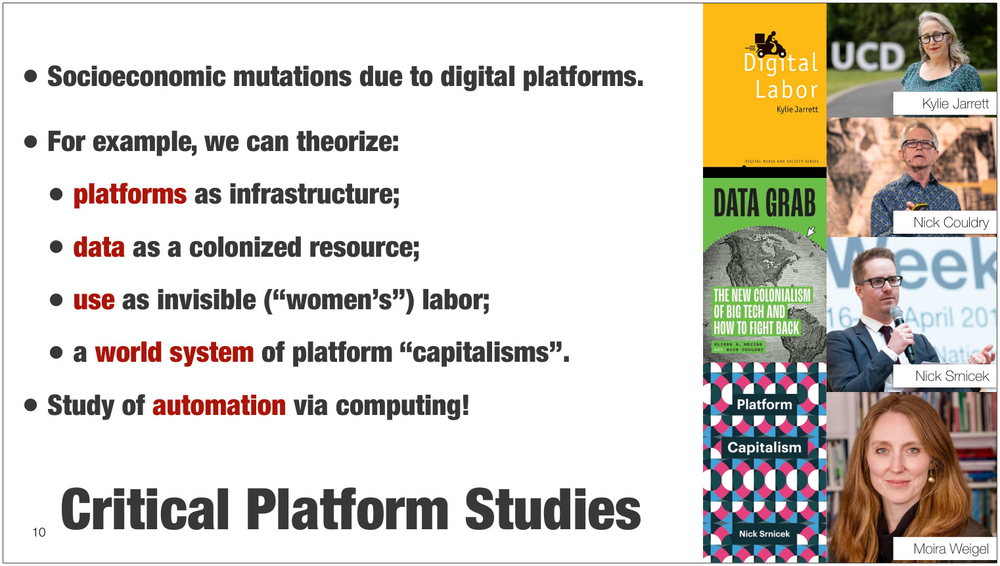
More narrowly, this talk is in critical platform studies as they study automation, these are just here as references if you want to look some of these folks up.
Two contrasting views on generative models.
What is generative models are automating? What capacity in humans? I think this is really at the core of trying to understand what is happening when they are deployed—what are they replacing?
First step will be to understand automation as a whole.
Here is a brief 101 on how to critically examine automation.
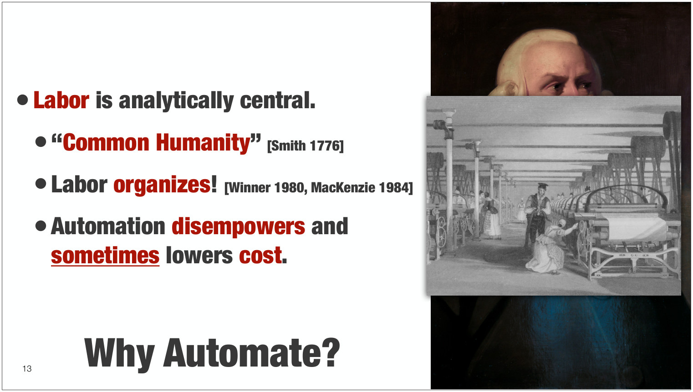
As is common in critical theory, labor is at the center of our discussion of automation.
Really, the most important thing to understand is that there is a lower bound oh how much you can pay a person and have them survive off of that and come to work. Reducing labor costs below that necessitates requires automation.
Now, that is somewhat of a simplistic view. Very influential work has point out examples of automation being introduced despite the newly invented machinery being both more expensive to maintain and worse at the task than the humans.
In one historical example, a metal worker's union was asking for more fair working conditions. The automation, as subpar as it was, gave an excuse to lay off a large parts of the workforce, sow fear into the remaining workers, effectively neutralizing organized labor.
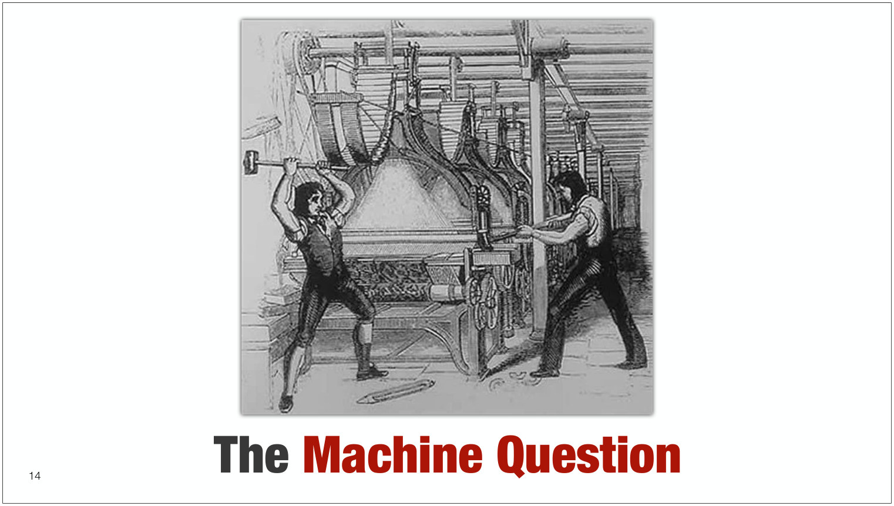
Debates on the effects of automation on workers that have existed since the dawn of capital.
Luddites, pictured here, are nowadays painted as anti-progress curmudgeons but really the machine-breaking movement was a form of protest against capital’s infringement on worker’s rights via automation.
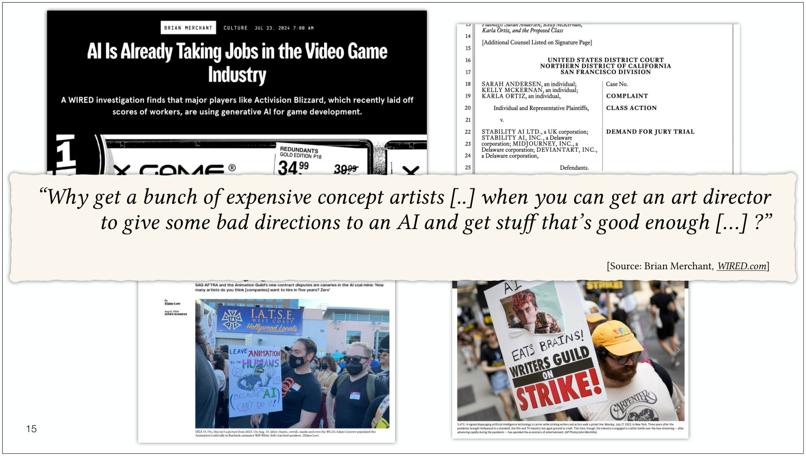
In 2026 the Luddite movement echoes once more.
Industry folks are saying: “…”
History teaches us that these this sentence is not disconnected from the images behind it. In an age of renewed interest in labor organizing, getting a worse but “good enough” result seems more appealing having a bunch of workers on your hands who want pesky stuff like wages and dignity.
So let’s go back to some theory again.
We’ll start with the view of generative models as an automation of intelligence.
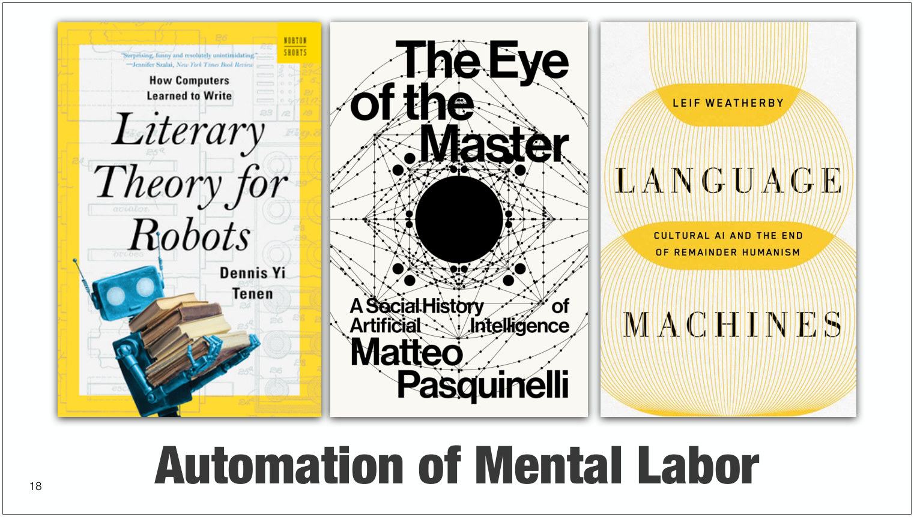
And really when we’re talking about an automation of intelligence in a critical theory context, we’re talking about an automation of mental labor.
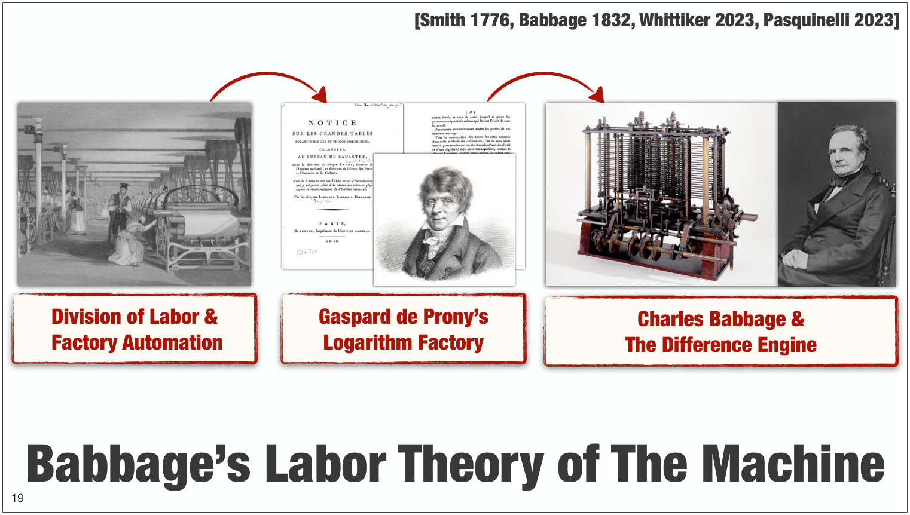
- It’s not just me!
- Charles Babbage himself, the guy who invented the first computer, viewed automation as intertwined with labor.
- He was inspired by the division of labor in a factory:
- if used to be a shoemaker, under division of labor, you’re just hammering the sole.
- Mental labor can also be made into a factory.
- Babbage said if once the job is so repetitive a machine can do it.
- It’s funny, he was really excited about the shareholder value this would bring!
Longer Version, Cut from Talk
Charles Babbage himself, the guy who invented the first computer, viewed his invention this way. And he called it the Labor Theory of the Machine.
Smithian economics viewed automation in terms of a division of labor: once labor is divided in a factory, the worker becomes deskilled and their jobs atomized. If you used to be a shoemaker, you could make the whole shoe, but now you’re just, e.g., repeatedly hammering the shoe sole. Smith said that hammering is now simple enough to be automated and can now be done by a machine!
Meanwhile, over in France, de Prony wrote this paper on how we could compute logarithms in a factory-like setting, with a bunch of deskilled workers at the bottom and a few rich mathematicians at the top.
Babbage found out about this and connected the dots and said, wait a minute, since mental labor can be divided up just like mechanical labor, I bet we could build a machine to automate the mental labor! And he was really excited about how much money this could save for the person who owned the machine. Then he went on to design the first computer as a realization of that dream.
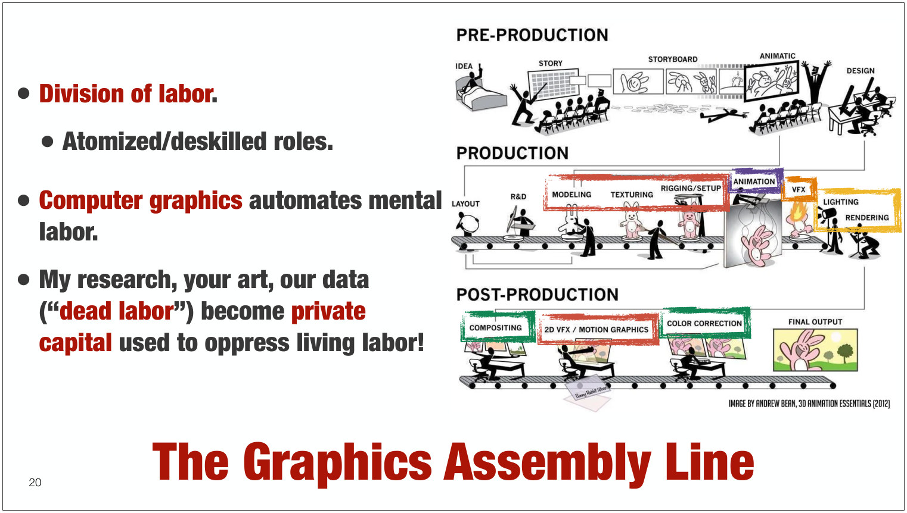
- If I try to connect what these scholars are saying to graphics, we can see that today, visual production is also divided into a factory and computer graphics has automated different stages within this factory line.
- I’ve tried to circle and color code the components of the factory line which correspond to different academic fields within graphics, we have geometry, animation, simulation, rendering, and computational photography.
- This is certainly one way of viewing computer graphics! Our job as researchers is to automate away the components of this pipeline.
- Importantly, critical theory reminds us that automated animation exists because of all the work we are doing today that we lose ownership over under current socioeconomic labor relations. Our work is turned into private capital that someone else owns and that they will use for future generation of generative models that will then go into getting me fired from my big studio job.
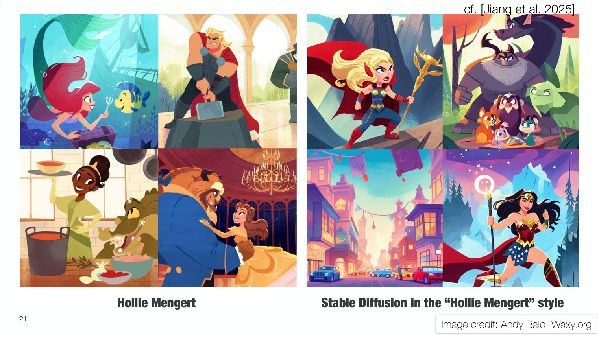
I think it’s really interesting that generative models make it visually really evident that their outputs really would not look the way they look without the labor the artist put into their art that has now crystalized into this privately held thing.
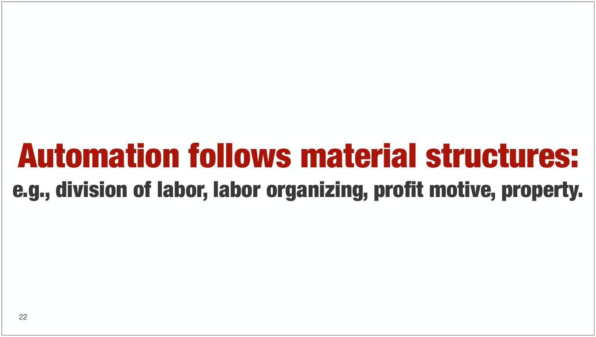
It is tempting to think that automation drives societal change (this is true to an extent), but Silicon Valley would like us to believe automation is inevitable.
But the thing to remember, really, is that the choice to automate, and the choice of what gets automated stems from the way we materially organize our world and our political economy.
In the last two examples, we saw that automation is a consequence of the factory, both in the way a factory atomizes and deskills workers and the way automation suppresses organized labor.
No speaker notes.
The alternative view is that generative models automate intellectual labor AND something else, something a bit broader that encompasses labor relations. So this is not really an alternative view as much as it is a complementary one.
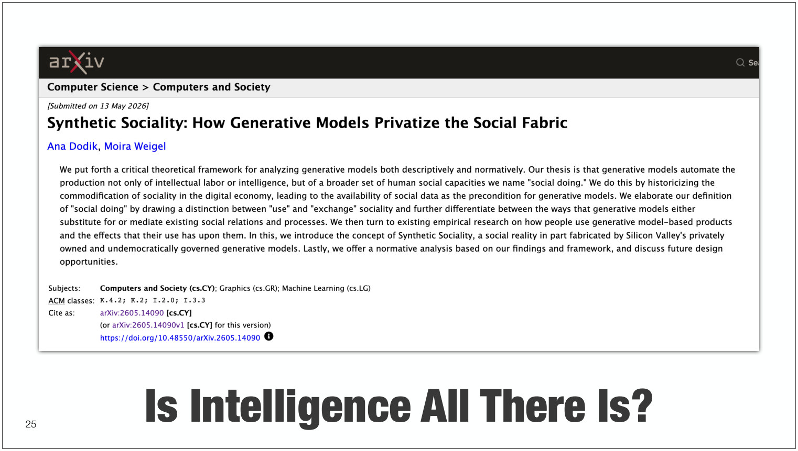
Disclaimer: this is my work from a recent preprint with Professor Moira Weigel.
The question we ask is: is intelligence all there is? Are we really upset because these models are better calculators than us?
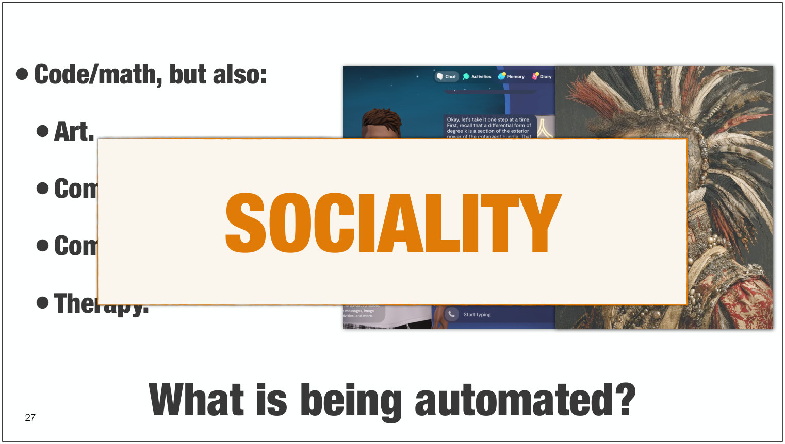
- Sure, they are good at writing code and taking derivatives of nasty equations, but if you look at some of the most prominent use cases, they’re being used to make art, write email for us, folks are having AI boyfriends, using it for therapy, etc.
- Is all of this just mental labor?
- In a way, all of these things are things we do to connect with other humans! So what does it mean when a machine—which is not human—does them instead?
- We claim that there is a broader human capacity being automated at a massive scale, one that includes labor power but also other things, it is the effort we put into building social ties with other humans, e.g., by making art.
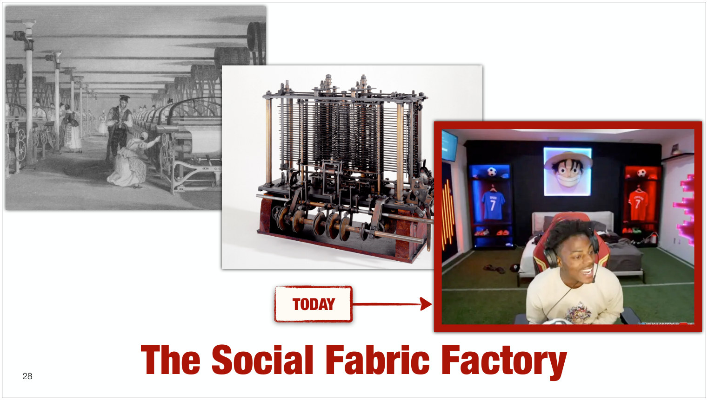
Really the picture is this:
It used to be that mechanical labor was divided up and produced in a factory line. And then intellectual labor.
In our paper, we claim that human sociality has become a factory line of commodity manufacture, where that commodity is “content”. And so now, it is our sociality that has been transformed.
In a world where all art is reduced to this commodity of Content—which generates profits for digital the platform—who cares whether it’s a machine making the commodity or a human?
As an aside, did you notice at some point how we stopped having filmmakers, artists, musicians and everyone got reduced to being a content creator?
There is a reason all examples in Lauren’s presentation were ads! Ads are commodity manufacture in its purest form!
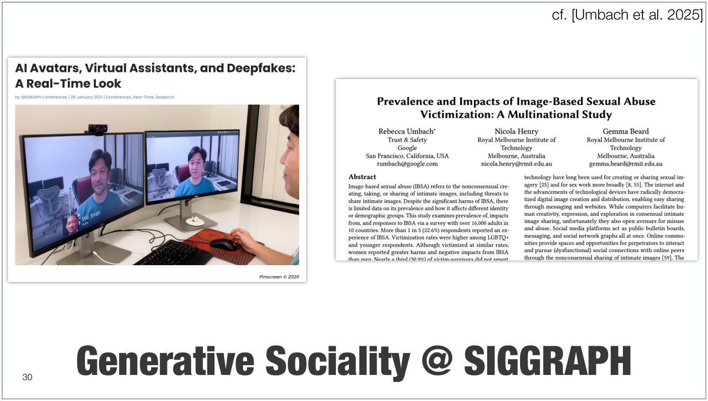
Lots of this stuff came right here from SIGGRAPH. AI avatars and deepfakes are all SIGGRAPH technologies.
Many of which are being used to substitute for human intimacy and actually most often via non-consensual sexually explicit imagery.
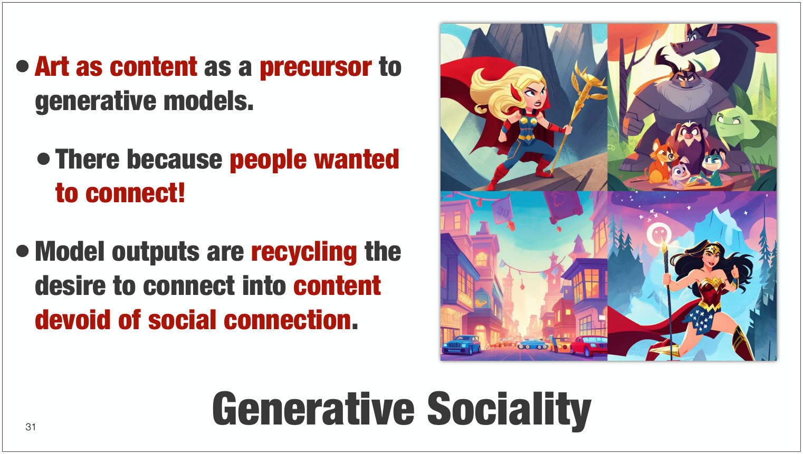
So in summary:
- The precondition for generative models was that art existed as content on digital platforms and that digital platforms rely on an ever increasing stream of content to make money. Because it is reduced to this commodity of content, the platforms don’t care how it’s made, it’s not there to connect people, it’s there.
- It only exists on the internet because people put in online to connect with other people.
- Model outputs are content devoid of social connection!
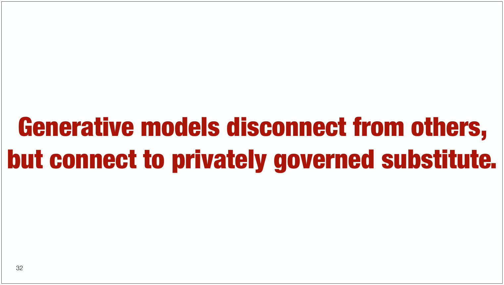
So if there is one thing you take away from this part, it is that generative models disconnect us from humans, but connect us to a thing Sam Altman controls.
No speaker notes.
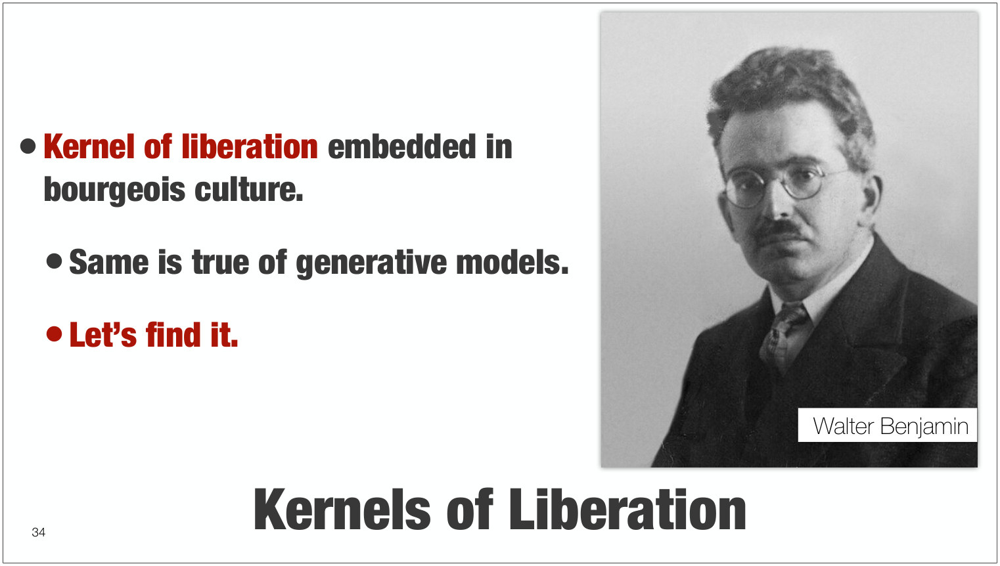
Walter Benjamin believed that the age of mechanical reproduction of art would bring liberation.
This is really a common theme in critical theory: traces of liberation must exist in whatever society we find ourselves, otherwise liberation is not possible. We must believe this if we believe in achieving a better world.
And the same logic applies to generative models. These things are objectively useful for some things! And that there must be traces of liberation in them too.
Ultimately, our goal as graphics researchers should be to find those traces, to find how to make versions of these technologies that help embody principles of liberation and not those of domination.
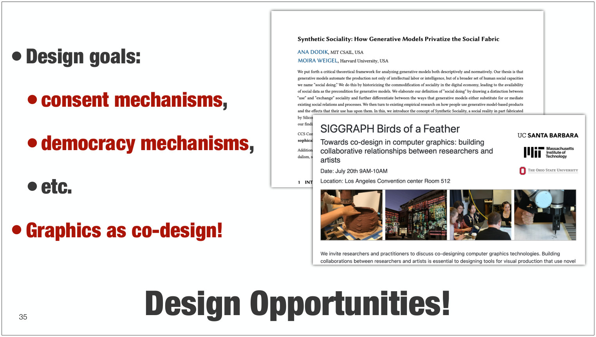
Even if we found ourself in a more just world tomorrow via various policy changes, existing models would still embody the socioeconomic conditions under which they were made. So, it is important to take inspiration from what we imagine that better world will look like and instill that into our research agenda.
Some alternative paths to pure automation are:
- Set a north star for yourself which is not pure diffusion sampling quality or speed. Some alternatives we propose in our paper are to build in mechanisms for democracy or for consent directly into generative models.
- Alternatively, we could tread graphics as co-design.
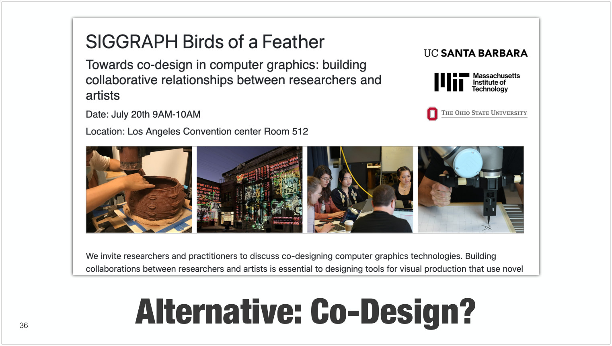
By co-design, I simply mean: you as an artist, and me as a researcher get together and design a cool new tool that we want to use!
Some labs in academia and industry already practice this and we would really like to see this trend grow. In fact, this SIGGRAPH, we co-organized this awesome Birds of a Feather event, together with Emilie Yu, Claudia Davis, Laleh Mehran, Chris Coleman, and Jennifer Jacobs, where we invited artists, academics and industry folks to discuss methods of co-design.
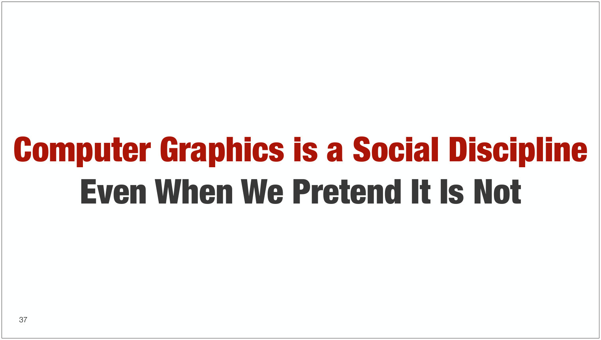
Ultimately, I want to leave you with one take-away: graphics is a social discipline, as much as we all like to pretend it is not!
Really, think about it. Our work as graphics practitioners impacts not only the labor issues we discussed here, but shapes our entire visual culture. Generative models are all over the place all over your social media feeds. Computer graphics shapes our societies.
I think gone are the days of being able to pretend this is not the case.
And if you’re a graphics researcher, consider this a call to action. Let’s recognize ourselves as making graphics technologies from within a larger socioeconomic status.
Thank you everyone, please get in touch with your hottest takes. Especially if you’re an artist… maybe if you’re a CEO or shareholder, don’t get in touch.
No speaker notes.
BibTeX